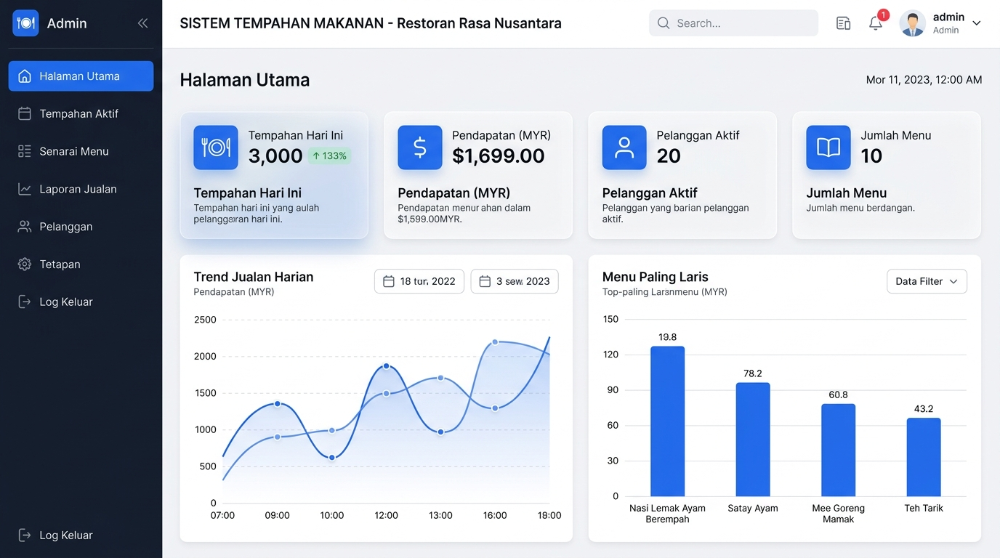
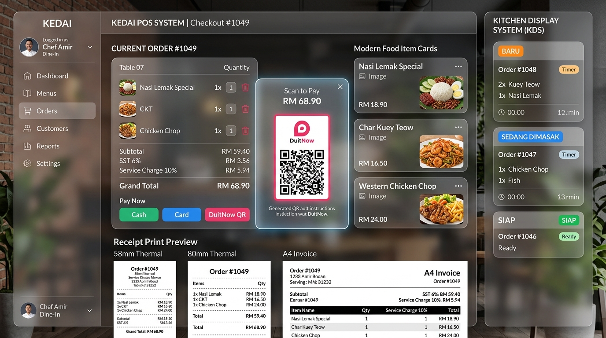

Sistem Tempahan Makanan - Politeknik METrO Tasek Gelugor
🔑 1. Log Masuk & Peranan Pengguna
Sistem ini menyokong 4 peranan utama dengan tahap kebenaran berbeza:
👑 Admin
User: admin | Pass: password123
Akses penuh ke Dashboard, Pengurusan Menu, Staff, Tetapan, dan Laporan Jualan.
💼 Cashier
User: cashier | Pass: password123
Pengurusan POS Kaunter, pesanan baharu, dan cetakan resit rasmi.
👨🍳 Chef
User: chef | Pass: password123
Paparan Dapur (KDS) untuk menguruskan masakan dan pesanan siap.
👤 Customer
User: customer | Pass: password123
Membuat tempahan makanan kendiri dari menu digital.
🍱 2. Pengurusan Menu & Muat Naik Gambar
Pilih modul Pengurusan Menu daripada Sidebar.
Tekan butang ➕ Tambah Menu Baharu atau ✏️ Edit pada menu sedia ada.
Pilih kaedah gambar: Muat Naik Fail Gambar dari peranti anda, URL Gambar, atau Galeri Preset.
Isi maklumat harga, harga promosi, anggaran masa penyediaan, dan penerangan.
Tekan 💾 Simpan Menu.

🛒 3. Troli POS, Nota Pelanggan & Checkout
Pilih menu hidangan daripada halaman Menu Pelanggan atau Troli & POS.
Masukkan nota khas pelanggan (contoh: Kurang pedas, Tambah telur, Tak mahu bawang, Kurang ais).
Tekan 🚀 Halaman Pembayaran (Checkout).
Pilih Jenis Tempahan (Dine In dengan No Meja / Take Away / Delivery dengan Alamat).
Pilih Kaedah Bayaran (DuitNow QR, Tunai, Kad Kredit, Touch n Go, GrabPay) dan sahkan pembayaran.

👨🍳 4. Paparan Dapur Masa Nyata (KDS)
Modul Paparan Dapur membolehkan Chef menguruskan pesanan secara digital:
Status BARU: Pesanan diterima dari kaunter atau pelanggan.
🔥 MULA MEMASAK: Chef menanda pesanan yang sedang dimasak.
✅ SIAP & HANTAR: Pesanan sedia untuk disajikan atau dihantar.
🧾 5. Cetakan Resit Rasmi & PDF
Sistem menjana resit rasmi berbutir lengkap dengan logo Politeknik METrO Tasek Gelugor dan alamat premis:
Format Cetakan: A4 Document, Thermal Printer 80mm, dan Thermal Printer 58mm.
Bebas Clipping: Resit dicetak secara 100% penuh tanpa sebarang pemotongan.
Muat Turun PDF: Menyimpan resit terus dalam format `.pdf`.
📊 6. Laporan Jualan & Eksport Excel (CSV)
Di modul Laporan Jualan, pengurus boleh menyemak statistik jualan mengikut tempoh Harian, Mingguan, Bulanan, atau Tahunan, serta menekan 📥 Eksport Excel (CSV) untuk memuat turun laporan bertulis ke dalam Microsoft Excel.
🤖 7. Pembantu AI Restoran (AI Assistant)
Tekan ikon robot 🤖 di bahagian atas kanan untuk bertanya soalan secara terus kepada Pembantu AI yang membaca pangkalan data sebenar.